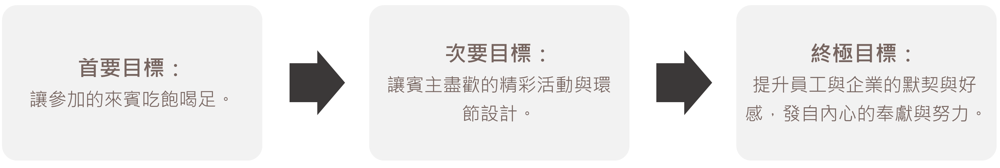

一場賓主盡歡的歲末聯歡慶功宴 尾牙活動專案
辦一場CP值最高的尾牙活動！立達辦的用心 大家玩得開心
當然也對於公司的尾牙抱著不小的期待...


辦一場CP值最高的尾牙活動！立達辦的用心 大家玩得開心
當然也對於公司的尾牙抱著不小的期待...
一場好的尾牙必須達成以下三個階段的目標：

一般的尾牙首要與次要目標的成效一眼就能看出來，而終極目標是需要長遠的觀察才有辦法體現，但其實許多尾牙都只顧及到首要目標-讓大家吃飽，頂多加一個抽獎活動，甚至有些尾牙只有冗長的致詞、需要談公事，相信在這種情況下無論是誰，即使美食當前也實在無法好好的享受。
我們可以在新聞上看到許多大企業的尾牙重金聘請歌星與各式豐富的表演，讓”抽獎”不再是尾牙活動中唯一一個亮點，所有參加的員工都開心滿意，連看到報導的民眾也想加入他們，那這就可以說是一場好的尾牙。
想要舉辦一場好的尾牙就需要縝密的規劃，從活動主題到流程制定、表演環節都可以注入巧思，更搭配合適的場地布置與主持，從頭到尾專案式的設計，不簡單，但絕對比隨便吃頓飯來的更有質感與成效。
尾牙除了不可或缺的長官致詞、抽獎等環節之外，在大家聚餐的這段時間也需要其他活動與表演讓參加的來賓感到豐富、開心。
以下三種為活眾中常見的表演項目：
①互動型
魔術秀、街頭藝人、達人秀等等，吸睛度高的互動性表演，可作為串場表演或是將眾人注意力聚焦於舞台的利器。
②音樂型
如電子樂團、古樂器演奏、歌手演唱、人聲樂團…等。此類風格差異較大，可以依照活動參與者的年齡和喜好來決定表演類型。
③舞蹈型
除了街舞、KPOP、爵士舞、現代舞，還有常見的民俗舞蹈、舞龍舞獅都是可以表演項目，可以搭配尾牙主題選任合適的舞蹈類型與風格。
當尾牙活動確立目標族群之後，可以針對目標族群的類型與喜好可以選任表演項目與風格，讓表演不只吸睛更讓所有參加者覺得有趣，更可以透過主持人的協助達到一個潤滑、帶動氣氛的作用。
活動都可以自己辦，尾牙當然也不例外。
自己辦理絕對可以節省經費，甚至可以讓員工負責主持、籌備表演節目，但這些”額外”的工作對員工來說也是一種負擔，尾牙精神本是犒賞大家一年來的辛勞，卻因為要在尾牙上主持、表演而需要花工作以外的時間去準備，其實稍嫌本末倒置，再加上並非專業人士，在主持或表演上可能都無法達到帶動氣氛、吸引目光的功用，最終仍只是一場來跟上司吃飯的聚會，期待的只是抽到大獎，無法達到增加員工信賴與好感度的終極目標，更不用說讓員工在明年繼續努力上進位公司付出了…
利用尾牙完美體現公司的福利，更能與各路人才搭上線，讓公司可以不斷向前，讓既有員工更加努力，也吸引優秀新血加入，是每間公司無論規模大小都必須做的事。請專業活動公司策辦尾牙，用同樣的預算規劃出更貼合需求、將質感與成效一併提升的活動方案，差就差在我們是「專業」的活動公司。經驗與管道人脈豐沛，在對外接洽的價格上可以有更多空間不吃虧，尾牙就讓員工好好休息，他們也會忠心的陪著公司走更久更遠。
剪綵儀式看似簡單，但越簡單的活動，越是在意細節的掌控，所以千萬不要以為差不多就好，要辦得成功，當中處處是學問。
立達廣告整合行銷有限公司有最專業的企劃人員以及身經百戰的團隊，
能夠幫你從頭到尾進行完整規劃，任何一處細節都不放過，也會與客戶進行縝密溝通，讓開幕活動盡善盡美。